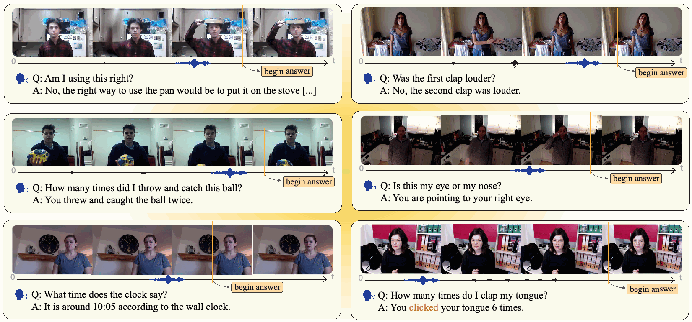
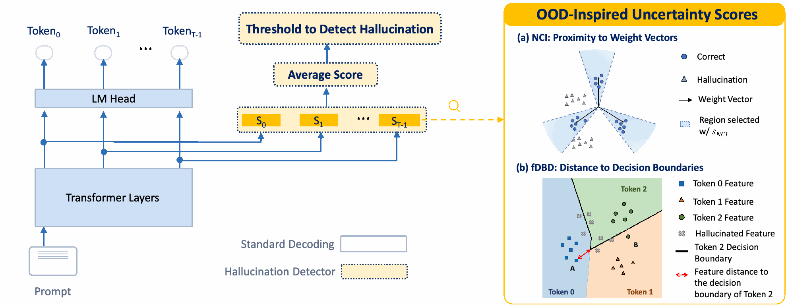
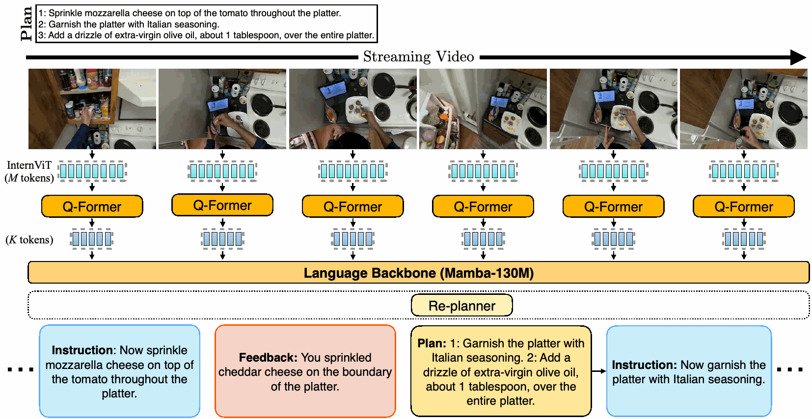
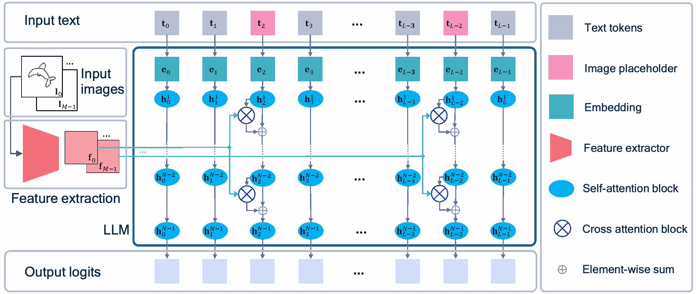
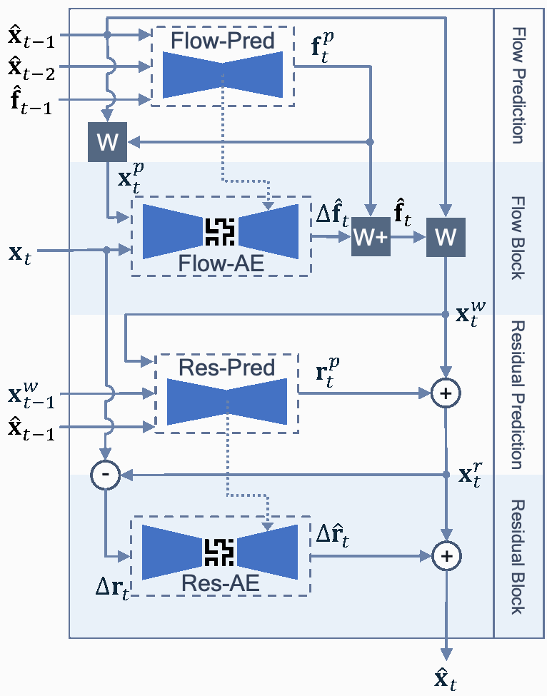
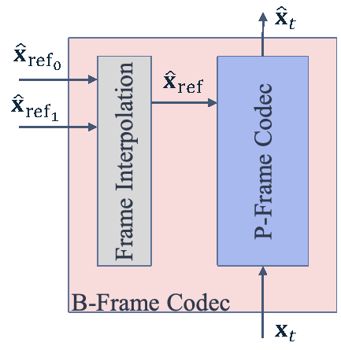

Reza Pourreza
Senior Staff Engineer and Manager · Qualcomm AI Research
San Diego, California, USA
I am a Senior Staff Engineer and Manager at Qualcomm AI Research. My research focuses on multimodal learning and reasoning, streaming video-language models, real-world interactive assistants, and token and compute efficiency in vision-language models. Previously, I worked on neural image and video compression, computational photography, and medical image analysis. I received my Ph.D. in Electrical Engineering from The University of Texas at Dallas in 2016, and my M.Sc. and B.Sc. from Ferdowsi University of Mashhad.
Work experience
- Qualcomm AI Research — Senior Staff Engineer and ManagerNov 2022 – Present
- Qualcomm AI Research — Staff Systems EngineerNov 2019 – Nov 2022
- Qualcomm AI Research — Senior Systems EngineerOct 2017 – Nov 2019
- National Institutes of Health — Computer ScientistAug 2016 – Sep 2017
- Philips Healthcare — Research Co-opJun 2015 – Jul 2016
- The University of Texas at Dallas — Research AssistantAug 2012 – May 2015
Selected publications
All publications →
Figure 1 · Dataset overview · Enlarge ↗Can Vision-Language Models Answer Face to Face Questions in the Real-World?
ICLR 2026
QIVD benchmarks how well multimodal assistants answer real-world questions from live video and audio, including when to respond.

Figure 1 · Method diagram · Enlarge ↗From Out-of-Distribution Detection to Hallucination Detection: A Geometric View
ICML 2026
Geometric uncertainty scores adapt out-of-distribution detection to flag hallucinations from a single LLM response without additional training.

Figure 2 · Model architecture · Enlarge ↗Can Multi-Modal LLMs Provide Live Step-by-Step Task Guidance?
NeurIPS 2025
LiveMamba watches a video stream to deliver timely instructions, detect mistakes, and revise plans during step-by-step tasks.

Figure 1 · Model architecture · Enlarge ↗Painter: Teaching Auto-regressive Language Models to Draw Sketches
ICCV Workshops 2023
Painter turns language models into sketch artists that generate and edit drawings stroke by stroke with visual feedback.

Figure 3 · Model architecture · Enlarge ↗Boosting Neural Video Codecs by Exploiting Hierarchical Redundancy
WACV 2023
Lightweight motion and residual predictors improve neural video compression by reusing temporal patterns beyond similarities between pixels.

Figure 1(a) · Method diagram · Enlarge ↗Extending Neural P-frame Codecs for B-frame Coding
ICCV 2021
A frame-interpolation module adds B-frame coding to existing neural P-frame codecs, improving compression by using past and future references.
- Figure 9 · Exposure fusion results · Enlarge ↗
Automatic Exposure Selection and Fusion for High Dynamic Range Photography via Smartphones
Signal, Image and Video Processing 2017
Automatic exposure selection and efficient image fusion bring high-dynamic-range photography to smartphones.


* Equal contribution. Figures are extracted from the linked papers; click to enlarge.